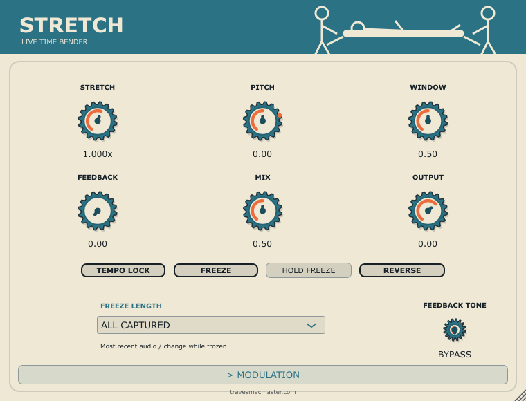

A machine by Travers MacMaster
STRETCH
STRETCH is a live time-bending audio instrument with stretch, pitch, window, feedback, mix and output controls. Tempo lock, freeze, reverse and an LFO section shape its temporal playback.
This instrument is not currently available to open on the web.
All machines
Getting started
What it does
- 01Stretch, pitch and window controls
- 02Feedback, mix and output controls
- 03Tempo lock, freeze, hold freeze and reverse
- 04Freeze length and feedback tone controls
- 05Two LFOs with target, waveform, sync, speed and depth controls
- 06Envelope modulation with attack, hold, release, sensitivity and amount
From the same studio